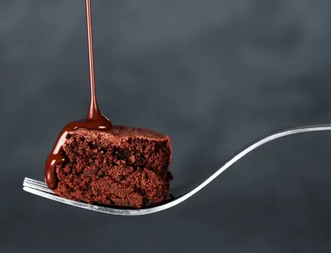

The Epitome of Chocolate

For all the chocolate lovers, Switzerland is the largest chocolate consumer. On averge, people eat around 11kg of chocolate per year. Switzerland has recognised 400 different swiss products offically as theirs/part of the Switzerland culinary heritage. They are known for there fine chocolaye made of fruity and nuty tones with hints of vanilla and caramel.
Brands like Lindt, Cailler, and Toblerone are all Swiss owned chocolate brands.
